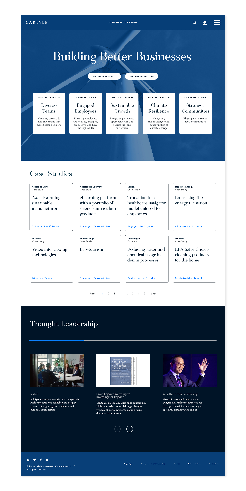
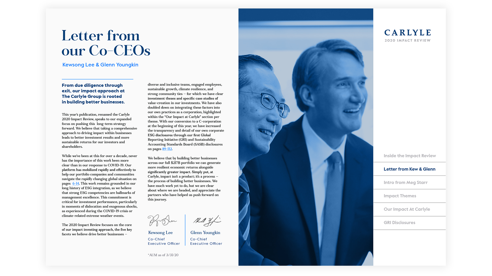
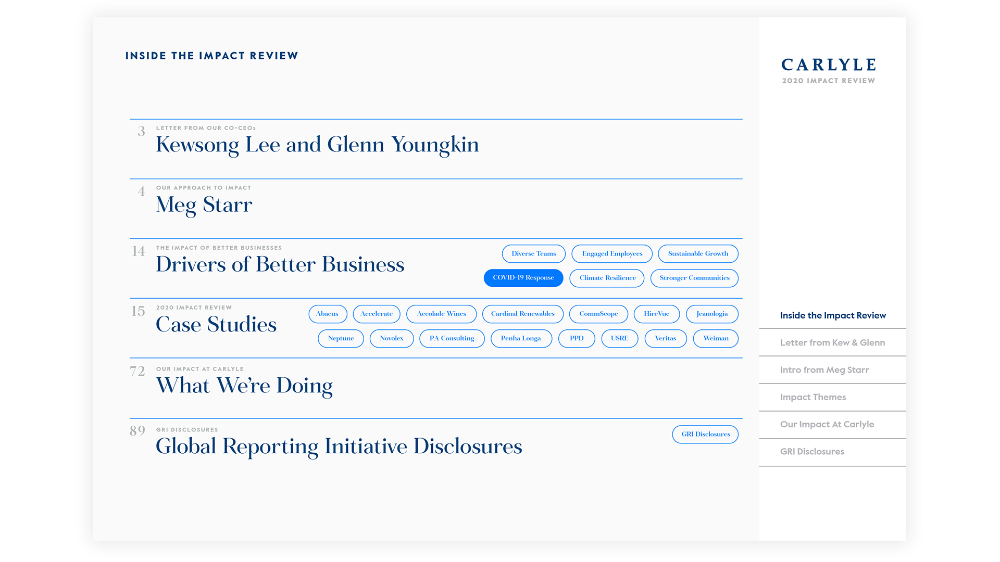
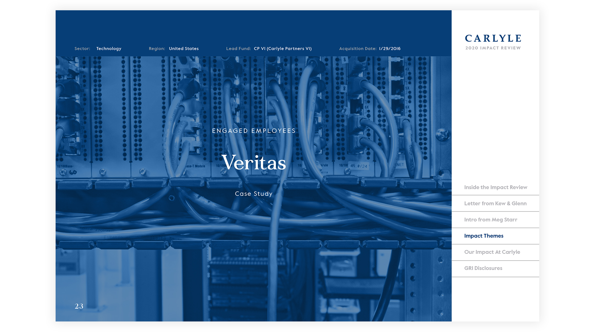
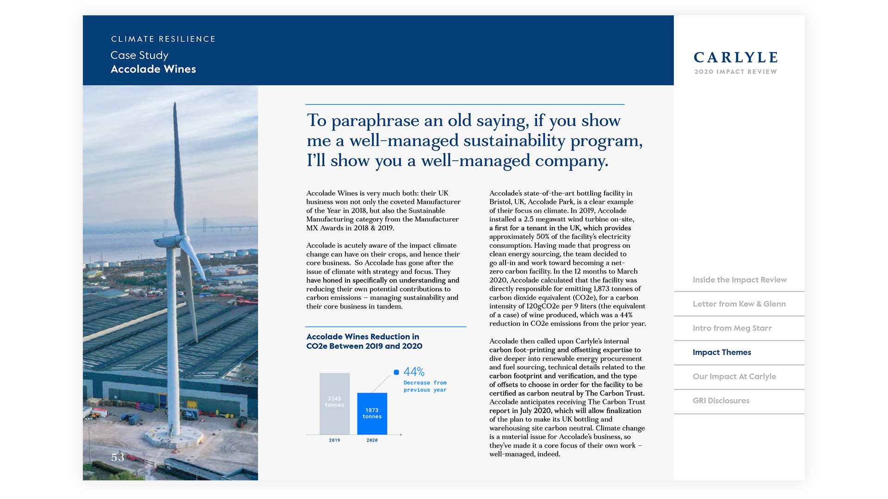
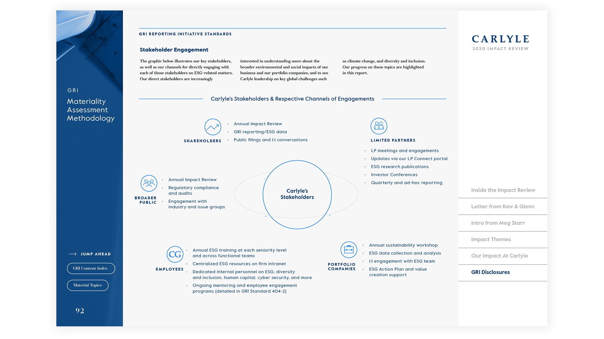
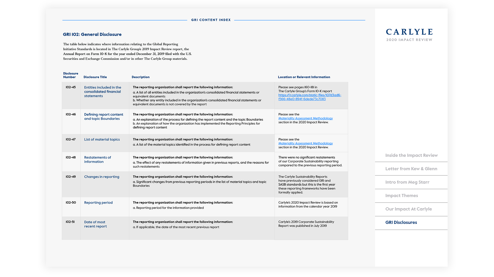

Editorial Design
Interaction Design
Digital Experience
Interactive PDF
The Carlyle Group's annual Impact Review is a complex document — spanning sustainability reporting, investment case studies, supplementary content, and legal disclosure. The 2020 edition needed a design approach that could handle that complexity without losing editorial clarity.
The work covered interaction design and editorial direction across a digital experience and an interactive PDF — building navigation that let different audiences move through the material on their own terms.






